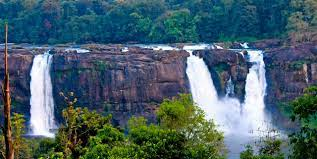

1
THIRUVANANTHAPURAM

Thiruvananthapuram (or Trivandrum) is the capital of the southern Indian state of Kerala. It's distinguished by its British colonial architecture and many art galleries. It’s also home to Kuthira Malika (or Puthen Malika) Palace, adorned with carved horses and displaying collections related to the Travancore royal family, whose regional capital was here from the 18th–20th centuries.
See More2
KOLLAM

Kollam is a city in the state of Kerala, on India's Malabar Coast. It’s known as a trade hub and for its beaches, like lively Kollam and secluded Thirumullavaram. Sardar Vallabhbhai Patel Police Museum has artifacts tracing the history of the police force. Nearby, Ashtamudi Lake is a gateway to the Kerala backwaters, a network of waterways rich with vegetation. The striped 1902 Tangasseri Lighthouse has ocean views.
See More3
PATHANAMTHITTA

Pathanamthitta is a municipality situated in the Central Travancore region in the state of Kerala, India, spread over an area of 23.50 km2. It is the administrative capital of Pathanamthitta district. The town has a population of 37,538. The Hindu pilgrim centre Sabarimala is situated in the Pathanamthitta district; as the main transport hub to Sabarimala, the town is known as the 'Pilgrim Capital of Kerala'. Pathanamthitta District, the thirteenth revenue district of the State of Kerala, was formed with effect from 1 November 1982, with headquarters at Pathanamthitta. Forest covers more than half of the total area of the District. Pathanamthitta District ranks the 7th in area in the State. The district has its borders with Allepey, Kottayam, Kollam and Idukki districts of Kerala and Tamil Nadu.
See More4
ALAPPUZHA

Situated on the south-western coast of India, Alappuzha is also known by its anglicized name Alleppey. Gifted with immense natural beauty, Alappuzha’s backwaters have been the mainstay of Kerala’s tourism. Alappuzha port used to be one of the busiest trade centers and traded with the Persian Gulf regions and even Europe. Close to Alappuzha lies Kuttanad, the ‘Granary of Kerala’, where farming is done below sea level.
See More5
KOTTAYAM

Kottayam is one of fourteen districts in the state of Kerala, India. Kottayam district comprises six municipal towns: Kottayam, Changanassery, Pala, Erattupetta, Ettumanoor, and Vaikom. It is the only district in Kerala that neither border the Arabian Sea nor any other states.
See More6
IDUKKI
Idukki district is a densely forested, mountainous region in the south Indian state of Kerala. In the north, Anamudi mountain towers over Eravikulam National Park, where the rare, blue Neelakurinji flower blooms every 12 years. Nearby, Munnar is a hill station known for its sprawling tea plantations and Tea Museum. Farther south is the vast, curved Idukki Dam and Periyar National Park, a tiger and elephant reserve.
See More7
ERNAKULAM

Ernakulam, IPA; IAST: Eṟaṇākuḷaṁ, in Malayalam: എറണാകുളം is a district of Kerala, India, that takes its name from the eponymous city division in Kochi. It is situated in the central part of the state, spans an area of about 3,000 square kilometres, and is home to over 9% of Kerala's population.
See More8
THRISSUR

Thrissur is a city in the south Indian state of Kerala. It's known for sacred sites and colorful festivals. In the center is Vadakkumnathan Temple, dedicated to Lord Shiva and adorned with murals. The ornate, Indo-Gothic Our Lady of Dolours Basilica is nearby. To the north, Thiruvambady Temple is home to several elephants. Sakthan Thampuran Palace houses an archaeology museum with bronze statues and ancient coins.
See More9
PALAKKAD

Palakkad District, in the southeastern part of the former Malabar district, is one of the 14 districts of the Indian state of Kerala. It is located right in the middle of the state. Also, it is the largest district in Kerala since 2006. The city of Palakkad is the district headquarters.
See More10
MALAPPURAM
Malappuram is a city in the Indian state of Kerala, spread over an area of 58.20 km². The first municipality in the district formed in 1970, Malappuram serves as the administrative headquarters of Malappuram district. Divided into 40 electoral wards, the city has a population density of 1,742 per square kilometre.
See More11
KOZHIKODE

Kozhikode is a coastal city in the south Indian state of Kerala. It was a significant spice trade center and is close to Kappad Beach, where Portuguese explorer Vasco da Gama landed in 1498. The central Kozhikode Beach, overlooked by an old lighthouse, is a popular spot for watching the sunset. Inland, tree-lined Mananchira Square, with its musical fountain, surrounds the massive Mananchira Tank, an artificial pond.
See More12
WAYANADU
Wayanad is a rural district in Kerala state, southwest India. In the east, the Wayanad Wildlife Sanctuary is a lush, forested region with areas of high altitude, home to animals including Asiatic elephants, tigers, leopards and egrets. In the Ambukuthi Hills to the south, Edakkal Caves contain ancient petroglyphs, some dating back to the Neolithic age.
See More13
KANNUR

Kannur is a coastal city in the south Indian state of Kerala. It was once an ancient trading port. Enduring monuments such as 16th-century St. Angelo Fort, once occupied by European colonial forces, show the city’s significant role in the spice trade. Housed in a former palace, the Arakkal Museum highlights Kerala's one Muslim royal family. The palm-fringed sands of Payyambalam Beach run along Kannur’s western shore
See More14
KASARGOD
Kasaragod, formerly Kassergode in English, is a municipal town and administrative headquarters of Kasaragod district in the state of Kerala, India. Established in the year 1966, Kasaragod was the first municipal town in the district.
See More